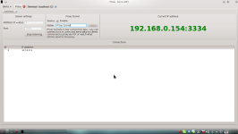

Lorris
GUI tool written in Qt which aims to be used when dealing with embedded devices, robots
and similar applications where you need to do something with data.
Downloads
There are binaries available for MS Windows. If you're using other operating system, you have to build Lorris yourself.
Windows binaries
Stable release - version 0.4.0
Testing release - Testing releases are available at GitHub downloads page
Changelog
Changelog is placed in repository: https://github.com/Tasssadar/Lorris/blob/master/CHANGELOG.
Source code
GitHub repository is at https://github.com/Tasssadar/Lorris, you can clone it with:
git clone git://github.com/Tasssadar/Lorris.git
Testing and newest changes are in "master" branch, stable release is in "stable" branch.
Thanks to github, you can also download source code in .zip or .tar.gz archive on downloads page.
Description
Main thing about Lorris is that it's modular - program iself provides only connection to target device, modules do all the work. You can run multiple modules at the same time (even connect them to the same port/address/whatever) as tabs, like in web browser.
Lorris is using Qt Framework (4.7), which (also) means it is multiplatform - it is tested on
Debian Linux(Wheezy, 64bit) and MS Windows(Xp, 7).
You can find Windows binaries in
downloads section.
- Serial Port
- TCP Socket
- Shupito Tunnel - explained here
- None(load from file)
Module: Analyzer
Supported connection types: Serial Port, TCP socket, None(load from file)This module is graphical parser of incomming data, and displays them in user-selected widgets. Incomming data are expected to be in packet format, preferably with some kind of header. Exact packet format is set in this window, it should be pretty self-explanatory.
(Image is worth a thousand words, so take a look at this screenshot
so you can understand what am I talking about)
Once you have packet structure set-up, you can drag widgets from right bar to main "workspace".
To assign data to widget, just drag desired byte (or first byte from left side, in case you want to display for example uint32, which is 4 bytes long)
from top data view to widget. Each widget has it's individual settings, accesible by right-click.
- Number
- Bar
- Color - expects three uint8s as RGB
- Graph
You can also save currect Analyzer configuration and received data to file, so that you do not have set up everything every time you use it.
Module: Serial port <-> TCP socket proxy
Supported connection types: Serial Port
This module acts as simple proxy between serial port and TCP socket. You can connect from Lorris (or another program) to this proxy via internet network.
It is kinda awsome, we tested it a while ago so that my friend from across the country programmed a chip laying on my table via this proxy :)
Module: Shupito
Supported connection types: Serial Port, TCP SocketThis is controling interface for Shupito programmer. It is programmer of microcontrollers or anything compatible with it. Lorris supports memory read, write and erasing and fuse read and write.
- SPI
- PDI
- Texas Instrument's CC25xx RF-enabled processors
It also can utilize Shupito's RSR232 tunnel ability. When you set-up tunnel (see this screenshot, left-top), new connection type will appear - "Shupito tunnel". It is basically forwarded serial port, and it acts like one, so every module which use serial port connection can also use Shupito tunnel.
Module: Terminal
Supported connection types: Serial Port, TCP SocketStandart terminal. It shows incomming data as normal text (and can handle \f, \r, \n and \b control characters) or as hex dump (you can chose mode in top "format" menu).
- Send each key press - sends each character immediately after key press
- TCP-terminal-like mode - shows what you type in terminal and sends it only when you press return/enter key
Build instructions
You will need QtFramework >= 4.7 to build Lorris (4.6 _should_ be also ok, but it is not tested).
Built binaries should be in bin/debug or bin/release.
Building on Windows
Download Qt SDK with Qt version >= 4.7 and gcc compiler, download Lorris, open Lorris.pro in QtCreator and hit "Build" button.
Building on Linux
Required packages:
- Qt SDK >= 4.7.0
- make, g++
- libudev-dev
- libsdl-dev (not sure about version, probably >= 1.2)
So, apt-get line for Debian Testing would look like this:
sudo apt-get install qt4-dev-tools libqt4-dev qt4-qmake g++ make libsdl1.2-dev libudev-dev
Lorris also needs libqwt >= 6.0.0, but it will build it by itself since 664209866876d439e4e9b02bf156e42c62b04c76.
Now you can build Lorris with QtCreator or go to Lorris folder and execute these commands:
qmake Lorris.pro
make
sudo make install
Lorris binary will be installed as /usr/bin/Lorris and translations as /usr/share/lorris/Lorris.*.qm.
Building on Mac OS X
Lorris can be built on OS X with a bit of effort (since 20b3dc2a75e7), but it looks kinda horrible and there are some weird crashes. Qt on Mac requires OS X version >= 10.6.
1. XCode
Download Xcode from that Apple store or whatsitsname. Can take a while.
When it is done, open XCode, top menu XCode->Preferences->Downloads and install "Console tools" (GCC is in this package).
Download libSDL source, extract it, open Terminal, go to the libSDL folder you've just created and run:
./configure make sudo make install3. Qt Framework
Just download Qt framework package and install it.
4. LorrisDownload Lorris source, open Terminal and go to it's folder.
/Users/*username*/QtSDK/Desktop/*your qt version*/bin/qmake CONFIG+=release make sudo make install
Lorris will be installed among other applications (eg. /Applications).
License & third-party libraries
Lorris is licensed under the GNU GPLv3 and uses these 3rd-party libraries:
- Qt Framework (http://qt.nokia.com/), the cross-platform application and UI framework,
which is distributed under the GNU LGPL v2.1 - Qwt (http://qwt.sourceforge.net/), Qt Widgets for Technical Applications,
which is distributed under the Qwt license - see dep/qwt/COPYING - QExtSerialPort (http://code.google.com/p/qextserialport/),
Qt interface class for old fashioned serial ports,
which is distributed under the New BSD License - see http://www.opensource.org/licenses/bsd-license.php - Modified version of QHexEdit2 (http://code.google.com/p/qhexedit2/),
"QHexEdit is a Binary Edior for Qt",
which is distributed under the LGPL v2.1 - see dep/qhexedit2/src/license.txt - SDL (http://www.libsdl.org), Simple directmedia layer, which is distributed under the GNU LGPL v2.1.
- Simple JavaScript Inheritance (http://ejohn.org/blog/simple-javascript-inheritance/),
implementation by John Resig,
which is distributed under the MIT license - see MIT_LICENSE - Tango Icon Library (http://tango.freedesktop.org/), which is released to the Public Domain.
Bug report
If you find bug in Lorris or if you want some new feature in it, please create an issue on github.
Screenshots
 Main window |
 Analyzer module |
 Analyzer module - packet structure settings |
 Shupito module |
 Terminal module |
 Serial port <-> TCP proxy module |
{kind=link}